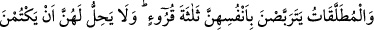

Allah Teâlâ’nın bunları meleğe ızhâr etmesidir. Yoksa Cenâb-ı Hak bunları çok önceden
hükme bağlamıştır.
Allah’a kavuşmayı kasdetmiş kimselerden birine, sülûk esnasında nefsin bıkkınlık ve
nefreti sebebiyle bir duraklama ve nefret ârız olursa şeyhin ve arkadaşlarının o zâtı
terketmemeleri, onu tekrar eski hâline döndürmek için gayret göstermeleri ve dört ay
süreyle tekrar dönüş yapmasını beklemeleri gerekir. Eğer samîmî olarak tâlib olur,
arkadaşlık ve dostluk hukûkuna riâyet etmek üzere dönüş yapar, kusûrunun
bağışlanmasını ister ve bu sûretle kendisine ikinci bir kez manevî ve rûhî bir heyecan
verilirse, arkadaşları ona yönelirler ve kusûrlarını affederler. Fakat bu öyle bir bahar
yeşilidir ki orada ancak aşktan zayıf düşenler; öyle meskendir ki orada ancak Allah’dan
başka her şeyden soyunanlar oturur. Bu öyle bir kaynaktır ki ondan ancak mâsivâyı
unutanlar içebilir. Bu öyle bir kapıdır ki sabredenlerden başkası onu çalamaz. Hattâ bu
sadece âriflerin tadacağı bir şarap ve âşıkların zevk alacağı bir şarkıdır.
Şayet dört ay geçtikten sonra yine de Allah’a vuslat yolunu terke azmedip ayrılık
yolunu tutmada ısrar ederlerse, arkadaşlarına düşen artık şu âyetin hükmüne
yapışmaktır: “İşte bu, benimle senin aramızın ayrılmasıdır” (el-Kehf, 18/78). Çünkü
Allah onların konuştuklarını işitir ve hâllerini bilir. Sa’dî der ki:
Bizim ortağımızda ahd-i vefâ vardı.
Sen cefâ ettin ve ahdini bozmuş oldun.
Sen tekrar ahdini tazeleyecek olursan
Öncekinden daha hoş ve sevgili olursun.
Şeyh Ebû Abdullah Şîrâzî der ki: Rüyamda Rasûlullah (s.a.)’i gördüm, şöyle
diyordu: “Kim Allah’a giden yolu tanır, o yola sülûk eder, sonra vazgeçerse Allah
ona, âlemlerde hiç kimseye yapmayacağı azâbı yapar.”
Levâkıhü’l-envâri’l-kudsiyye fî menâkıbı’l-Ülemâ ve’s-sûfiyye adlı eserde böyle
geçmektedir.
228. Boşanmış kadınlar, kendi başlarına (evlenmeden) üç ay hali (hayız veya
temizlik müddeti) beklerler. Eğer onlar Allah’a ve âhıret gününe gerçekten
inanmışlarsa, rahimlerinde Allah’ın yarattığını gizlemeleri kendilerine helâl olmaz.